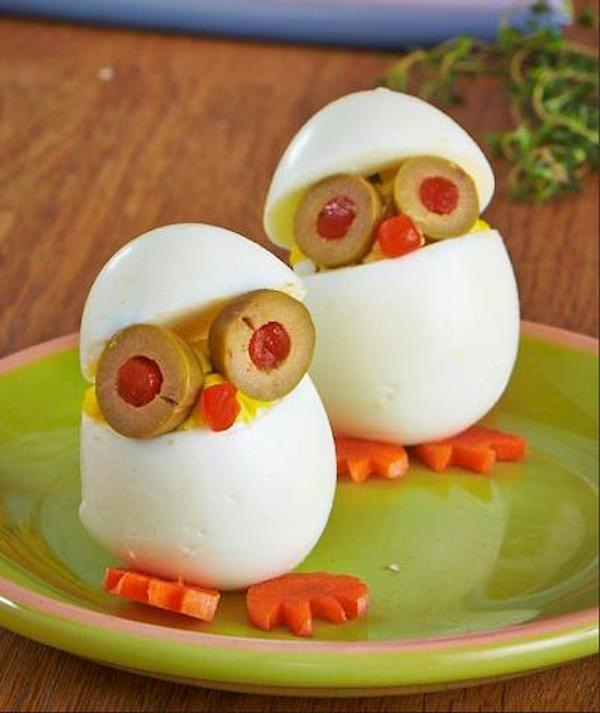

"HUEVITOS DIVERTIDOS" 

Ingredientes
- 8 huevos grandes duros
- 4 aceitunas rellenas de pimiento
- en rebanadas delgadas
- 1 zanahoria para los pies
- Mayonesa light (cantidad suficiente)
- Sal y pimienta al gusto
Procedimiento
- Coloca los huevos en una olla de agua fría.Llevar a ebullición a fuego medio-alto,
revolviendo suavemente y constantemente.
- Hierve y revuelve suavemente durante 2 minutos.
- Colocar la tapa, que cierre bien y apagar el fuego.
Dejar reposar durante 25 minutos.
- Coloca con cuidado los huevos en un tazón de agua con hielo.
Dejar reposar durante 5 a 10 minutos.
- Con cuidado, enjuague con agua fría, colocar sobre papel absorbente.
- Corta una rebanada delgada de fondo de cada huevo para que se levanten.
- Con un cuchillo de pelar, cortar el tercio superior del huevo y retirar
con cuidado las tapas. Saca las yemas.
- Colocar las yemas en un bol y haz un puré con un tenedor (agregue un poquito de mayonesa).
Añadir sal y pimienta al gusto.
- Sobrellenar la clara de huevo inferior con el relleno, colocar la parte de arriba
presionando cuidadosamente con mucha suavidad.
- Colocar dos rebanadas de aceitunas para los "ojos".
También corta 'pies' de una rebanada delgada de zanahoria cortando varias formas triangulares.
Siguenos en: